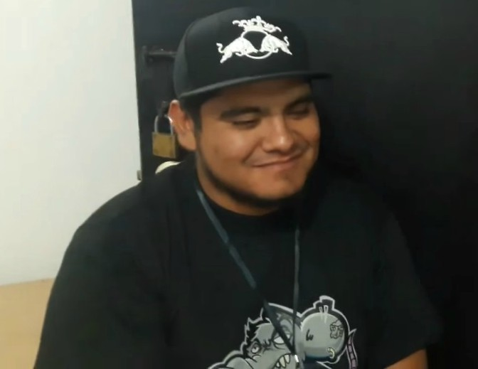

Patró
En el freestyle, un patró és l'equivalent a una estrofa en poesia. La base o instrumental acostuma a ser una melodia repetitiva, un patró que es repeteix. Aquesta repetició permet que el freestyler sàpiga quan ha de començar la següent "estrofa". La durada
de cada patró pot oscil·lar entre els 7 i els 20 segons, tot i que els més habituals són de 10 segons (base de rap) i els de 15 (base de trap). Cada patró està subdividit en 4 barres o línies, l'equivalent als versos en poesia. També se les anomena
compassos, ja que la durada d'una barra en el beat sol equivaldre a un compàs musical 4/4. Habitualment, les 2 primeres barres s'anomenen farciment (relleno, en castellà), ja que no tenen cap relació amb el missatge que es vol donar; la tercera
és la barra d'enllaç, en què s'introdueix el context del missatge, i la quarta és el que s'anomena punchline (literalment, "línia d'atac"), que conté el missatge d'aquell patró.[2] Tanmateix, els MCs amb més coherència, també utilitzen la segona
com a barra d'enllaç i, en alguns casos, poden arribar a utilitzar les 3 primeres. Ara bé, depenent de cada freestyler i de cada moment, es poden fer moltes variacions de l'anterior estructura formal. Per exemple, hi ha qui fusiona la primer barra
amb la segona i la tercera amb la quarta i, d'aquesta manera, fa patrons de dues barres llargues: una d'enllaç o farciment, i un punchline. O el que també és molt habitual i es veu, sobretot, en batalles antigues (2005-2009), és dividir el patró
en dos apariats, component-lo així d'una barra d'enllaç o farciment, un punchline, una barra d'enllaç o farciment, i un altre punchline. Formats En les batalles de galls, depenent de la manera en què es distribueixin els torns de cada raper i
amb quines condicions improvisin, direm que es tracta d'un format o d'un altre. Les rondes cara a cara són aquelles en què els dos rapers van responent als atacs de l'altre. Els tipus de rondes s'indiquen amb el nombre de barres de què consta
cada intervenció. La més habitual és el 4x4, en què cada intervenció dura 4 barres (1 patró), però també hi ha el 2x2 (2 barres, mig patró), que es caracteritza per requerir respostes ràpides, sovint en forma d'apariat. A més, també s'usa el 8x8
(8 barres, 2 patrons) i, a vegades, el 12x12 (12 barres, 3 patrons). Aquests tipus de rondes solen durar entre 1 i 2 minuts.[3] Les rondes individuals sovint duren 6 patrons, pel que tenen una durada d'un minut, en el cas de les bases de rap,
o d'un minut i mig, en el cas de les de trap. En els minuts lliures, els MCs tenen total llibertat per escollir el tema de la seva improvisació. Però també pot ser que se'ls ofereixin certs estímuls per improvisar, com imatges, paraules o temes
en concret. Concretament, a les lligues Freestyle Master Series, hi ha l'Easy Mode, en què apareix una paraula nova cada 10 segons, i el Hard Mode, en què apareix cada 5, i rondes a temàtica, que, a diferència de la resta, solen durar 4 patrons.[4]
Tots els anteriors formats també poden fer-se sense base, en el que s'anomena una ronda a cappella. Es pot fer una ronda a cappella en qualsevol dels formats, però el més freqüent és fer una curta intervenció a cappella abans de la ronda cara
a cara, i immediatament posar la base per a la nova ronda. Habilitats valorades en els freestylers Flow El flow pot definir-se de moltes maneres, la traducció literal és «fluïdesa». Normalment es refereix a la capacitat per improvisar adaptant-se
correctament a la base (la melodia sobre la qual s'improvisa). La seva importància és variable i molt subjectiva, ja que cada MC ho valora de diferent manera: alguns opinen que per improvisar cal tenir abans de res enginy i valoren molt el que
es diu, altres opinen que la improvisació és una forma de rapejar, i per tant, ha de cenyir-se a la base. Actualment, alguns dels freestylers amb millor flow són Trueno, Wos i Stigma. Enginy L'enginy consisteix a tenir bones idees, originalitat.
Com més complexitat té una rima pel que fa al contingut, se sol dir que té més enginy. En el cas de les batalles, el fet de realitzar un bon atac als defectes del rival o de respondre en qüestió de segons als seus atacs, així com rimar sobre esdeveniments
que estan passant en aquell moment són bones maneres en què un raper pot mostrar el seu enginy, ja que demostren improvisació real. Sweetpain, Arkano, Aczino i Chuty estan entre els freestylers més enginyosos. Actitud o posada en escena
L'actitud es defineix com la soltesa, és especialment important en les batalles. Un MC ha d'improvisar amb força, decisió, desimboltura i seguretat per causar el major impacte i mostrar la seva superioritat verbal (que al cap i a la fi és del que es tracta
en una batalla, de ser més gall). Podríem dir, doncs, que un raper que es mostra nerviós sobre l'escenari té poca posada en escena. Alguns dels freestylers amb més posada en escena són Dtoke, Arkano, Aczino i Káiser.
Punchline
Tècnicament, el punchline o línia d'atac és l'última barra (l'equivalent a un vers en la poesia) d'un patró (l'equivalent a una estrofa). Tradicionalment, el punchline conté el missatge principal del patró i va precedit de 3 barres que serveixen d'enllaç
i que "preparen el terreny" per llençar la línia d'atac. És per això que, quan un competidor llença rimes particularment insultants i enginyoses en aquest últim compàs es diu que "té bon punchline". Tenir bon punchline no és exactament el mateix
que tenir bona posada en escena, però solen anar de la mà.
Implicar el públic
Normalment, les competicions les decideixen diversos jurats basant-se en criteris propis, però també mesuren l'ànim rebut pel públic en cada MC i la seva reacció. En això també juga un paper important el fet de ser conegut o de jugar a casa, així com
l'enginy, atès que una rima imaginativa pot aixecar al públic de manera instantània. La implicació del públic s'aconsegueix, principalment, a través de la posada en escena.
Tècniques
Les tècniques es refereixen sobretot a la forma de les rimes. Alguns exemples són la utilització de figures retòriques o mètriques; l'execució de les rimes d'una forma complicada, com és el cas del doble tempo o potser la coherència, o bé l'ús d'estructures
que enbelleixen el resultat final.
Estructures, mètriques i figures retòriques
En el cas de les figures retòriques, s'utilitzen les mateixes que en la literatura o la poesia. Alguns exemples en són el paral·lelisme, el calembour o l'antítesi. Pel que fa a les anomenades mètriques, el recurs més valorat és la rima multisilàbica o
one-two.[5] Aquesta última és semblant a una rima assonant normal i corrent, amb la diferència que també rimen vocals d'abans de l'última síl·laba tònica. Pel que fa a les estructures, consisteixen en anar combinant les rimes d'una forma més complexa
que el simple apariat. L'exemple més senzill és l'estructura ABAB. Molts cops, l'ús d'estructures, mètriques i figures retòriques van de la mà. És el cas de Bnet, que domina sobretot mètriques i estructures, centrant-se una mica més en aquestes
últimes; Zasko, CompareFlow i El Menor, que tenen un estil semblant al de Bnet, però potser més centrat en les mètriques, i Ricto, que domina tant mètriques com figures retòriques. També hi ha el cas de Blon, que se centra solament en les figures
retòriques.
Altres tècniques
Hi ha altres habilitats com la coherència o el doble tempo,[6] les quals sovint es discuteix si formen part de l'habilitat "tècniques" o si són una habilitat en elles mateixes. La coherència és la capacitat d'improvisar les rimes tot formant oracions
que sonin naturals, usant poques "frases crossa" o "farciment" (més conegut com a relleno en castellà). Segurament, els rapers amb més coherència són Letra i Stuart. El doble tempo es tracta d'improvisar tant ràpid com sigui possible. Hi ha pocs
rapers que aconsegueixin dominar el doble tempo mantenint una certa coherència. El qui més ho dominen són Chuty, Bta, Cacha i Kodigo.
